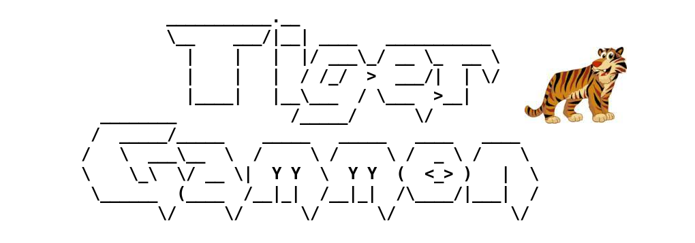

| Client configuration: |
server
|
tigergammon.dyndns-home.com
|
|
port
|
4321
|
August 24. Special: since FIBS
is offline for 24 hours you may just
play here.
Welcome to TigerGammon, a new free backgammon server.
You can and should play on this
site. The server is still on status alpha.
You should NOT play tourneys or league.
Please
wait until TigerGammon
is on production.
This site is driven by Andreas.
It is still under construction. But you will find some answers here.
Most important:
You can play on this site with your favorite Fibs client. You just have
to set the server on your preferences.
On JavaFIBS you'll find that
at Preferences/Server.... At Host fill in tigergammon.dyndns-home.com. Leave
Port at 4321.
On 3DFibs or FibsZilla you will find that at Options/Preferences. There on the
first tab you see Connections
and Host.
Same thing: put in tigergammon.dyndns-home.com.
Leave
Port
at
4321.
Second important:
You have to register on your
first visit.
On JavaFIBS there is a
problem. We are working on that. For the time being resort to telnet,
if you know how to handle that. Or try 3DFibs.
On 3DFibs or FibsZilla registration is quite straightforward. Where you
log on you simply click the Create
button after you filled in your preferred nick and password.
Bugs?
Unfortunately we still have some bugs - it is still in alpha. Bugs that
are blocking games or matches are top priority.
You may try the command 'news'
when logged into TigerGammon. You will see a list of bugs and their
status.
1) Greedy does not work properly. Don't use it.
2) Sometimes the server is wrong about the number of possible moves.
Then the game hangs and will not continue, even after resume.
3) Bots might 'fall dead' after cube actions. Better play 1 pointers.
4) In some cases a cubed game is not yielding the correct number of
points.
Recently fixed:
1) Registration with JavaFIBS works ok, now.
About TigerGammon
What is TigerGammon?
Who features TigerGammon?
What's the difference to
FIBS?
Are there bots on
TigerGammon?
Is
TigerGammon German? Do they speak German there?
Is TigerGammon a free server?
How good is TigerGammon so far?
What about the clients?
How to log into TigerGammon?
Nothin' goin' on on TigerGammon!
About
TigerGammon
What is TigerGammon?
TigerGammon is just another backgammon server like FIBS. TigerGammon wants to keep the
institution FIBS alive.
TigerGammon works just like FIBS. Over time you will see features that
exceed, what you can see on FIBS. Features like
- chouette
- money games
- ....
Who features TigerGammon?
Andreas Hausmann features TigerGammon. He is another Fibster discontent
with the flaws of FIBS just like so many others.
Talk to him via andreas
(
a
t ) tigergammon.com.
Or try skype calling tigerbackgammon.
Top
What's the
difference to FIBS?
FIBS is having technical problems - I think, it is just being old.
TigerGammon is new. There may be new features that many have waited for
so long, like:
- chouette
- money games
- time control
- ....
and some annoying things should vanish like:
- short timeouts
- long response times, when there is more than 200 logged on users
- droppers or strange dropper treatment
- limitation to 250 users
- IP or domain bans
Top
Are there bots on
TigerGammon?
Yep! Go and play them.
Oh - they play quite fast. I am working on a delay that you can
configure individually. Just a few more days.
Top
Is
TigerGammon German? Do they speak German there?
Nope - TigerGammon is international. Speak whatever language you like.
The website should be multilingual in the long run. If you want to do
some translations, tell me here.
Presently and while only testing the server German may be prevailing.
Top
Is TigerGammon a free server?
Well sure! TigerGammon is just as free as FIBS. Just come on and play
backgammon. You are supposed to have fun.
Top
How good is TigerGammon
so far?
TigerGammon is still in alpha version. That means that a lot of
features are working. Still there are some flaws. We are working on it.
Beta should be released in fall 2011. Then it should be fully featured
and most bugs fixed.
Top
What about the clients?
TigerGammon works (largely) the same as
FIBS. The clients (JavaFIBS
and 3D-FIBS,
and
others)
should
be
working
just
like
that. Of course there are some
issues. Biggest problem is, that smart phones apps can't chose there
server. That is to be fixed.
Top
How to log into
TigerGammon?
You connect to the server at tigergammon.dyndns-home.com.
This
will
change
to
tigergammon.com
some day or even ti-ga.com.
Right now you have to enter tigergammon.dyndns-home.com
to your server configuration.
Using JavaFIBS it is the menu Preferences/Server. There you enter
the
Host
tigergammon.dyndns-home.com instead of fibs.com.
Port stays
4321.
Using 3DFibs you go Options/Preferences and see the form
FIBS. There the field Connection
needs the server tigergammon.dyndns-home.com.
Port
stays
4321.
Remember: TigerGammon is new. You
probably need an account and first have to register.
Top
Nothin' goin' on on
TigerGammon!
Well noticed. Many people should be told and should log in. Up! Go! Get
'em!
Top
Who
is
in
charge?